เมื่อจบบทนี้ นิสิตจะทำได้- อธิบาย event source, event object และ listener
- เขียน ActionListener ด้วย anonymous class และ lambda
- อ่านค่าจาก component แล้วแสดงผลลัพธ์
- เก็บ state ของโปรแกรมและอัปเดต UI บน EDT
16. จากหน้าจอนิ่ง สู่หน้าจอที่ตอบสนอง
ในบทที่ 14–15 ปุ่มกดแล้วไม่มีอะไรเกิดขึ้น เพราะยังไม่ได้บอกโปรแกรมว่า “เมื่อคลิกแล้วให้ทำอะไร” บทนี้จะเรียนการเขียนโปรแกรมแบบขับเคลื่อนด้วยเหตุการณ์ (event-driven) ภาพผลลัพธ์ส่วนใหญ่มี 2 ภาพ คือก่อนและหลังการกระทำ ซึ่งได้จากการรันโปรแกรมจริงแล้วจำลองการพิมพ์/คลิก
3 ส่วนของระบบเหตุการณ์- Event source — component ที่เกิดเหตุการณ์ เช่น JButton
- Event object — ข้อมูลของเหตุการณ์ เช่น ActionEvent (ใครเป็นต้นเหตุ เมื่อไร)
- Listener — โค้ดของเราที่ “ลงทะเบียน” ไว้กับ source และถูกเรียกเมื่อเกิดเหตุการณ์
16.1 Event source และ listener
ลำดับเหตุการณ์เมื่อผู้ใช้คลิกปุ่มผู้ใช้คลิกปุ่ม
│
▼
ระบบปฏิบัติการ → JVM → EDT สร้าง ActionEvent
│
▼
JButton (source) เรียก listener ทุกตัวที่ลงทะเบียนไว้
│
▼
actionPerformed(ActionEvent e) { ...โค้ดของเรา... } ← ทำงานบน EDT
│
▼
เราเปลี่ยนข้อความ label → Swing วาดหน้าจอใหม่
ตัวอย่าง 16.1.1 · ปุ่มแรกที่ทำงาน: นับจำนวนคลิก พื้นฐาน
แนวคิด: เรียก addActionListener กับปุ่ม และส่งโค้ดที่ต้องทำเมื่อคลิก (ในรูป lambda) — ตัวนับเก็บใน field เพราะต้องจำค่าข้ามการคลิก
ClickCounter.java
import javax.swing.*;
public class ClickCounter {
// static: lambda แก้ค่าตัวแปรนี้ได้
private static int count = 0;
public static void main(String[] args) {
SwingUtilities.invokeLater(() -> {
JFrame frame = new JFrame("Counter");
frame.setDefaultCloseOperation(JFrame.EXIT_ON_CLOSE);
JLabel label = new JLabel("Clicks: 0");
JButton button = new JButton("Click me");
// ลงทะเบียนงานที่ทำเมื่อคลิกปุ่ม
button.addActionListener(e -> {
// โค้ดใน lambda ทำงานทุกครั้งที่คลิก
count++;
// อัปเดตข้อความบนหน้าจอ
label.setText("Clicks: " + count);
});
JPanel panel = new JPanel();
panel.add(button);
panel.add(label);
frame.add(panel);
frame.pack();
frame.setVisible(true);
});
}
}
หน้าต่างที่ได้ (ภาพจากโปรแกรมจริง)เริ่มต้น
Counter

หลังคลิก 3 ครั้ง
Counter

อธิบายทีละขั้นaddActionListener(e -> { ... }) ลงทะเบียนโค้ดไว้กับปุ่ม — ยังไม่ทำงานตอนนี้- main จบ หน้าต่างรอเหตุการณ์
- ทุกครั้งที่คลิก โค้ดใน lambda ทำงาน: เพิ่ม count แล้วเปลี่ยนข้อความ label
- count ต้องเป็น field (ไม่ใช่ตัวแปร local) เพราะ lambda แก้ตัวแปร local ไม่ได้ และค่าต้องคงอยู่ระหว่างการคลิก
ตัวอย่าง 16.1.2 · หลายปุ่ม หลาย listener ต่อยอด
แนวคิด: แต่ละปุ่มมี listener ของตัวเอง ทุก listener แก้ state ชุดเดียวกัน (value) แล้วเรียกเมธอดอัปเดตหน้าจอ
StepperApp.java
import javax.swing.*;
import java.awt.*;
public class StepperApp {
private static int value = 0; // ค่าที่ปุ่มทุกปุ่มใช้ร่วมกัน
// เก็บเป็น field เพื่อให้ refresh() เข้าถึงได้
private static JLabel display;
public static void main(String[] args) {
// ส่งเมธอด createGui ให้ EDT
SwingUtilities.invokeLater(StepperApp::createGui);
}
private static void createGui() {
JFrame frame = new JFrame("Stepper");
frame.setDefaultCloseOperation(JFrame.EXIT_ON_CLOSE);
display = new JLabel("0", SwingConstants.CENTER);
display.setFont(new Font("SansSerif", Font.BOLD, 28));
JButton minus = new JButton("-");
JButton plus = new JButton("+");
JButton reset = new JButton("Reset");
// หลายคำสั่งใน lambda บรรทัดเดียว
minus.addActionListener(e -> { value--; refresh(); });
plus.addActionListener(e -> { value++; refresh(); });
reset.addActionListener(e -> { value = 0; refresh(); });
JPanel buttons = new JPanel();
buttons.add(minus);
buttons.add(plus);
buttons.add(reset);
frame.add(display, BorderLayout.CENTER);
frame.add(buttons, BorderLayout.SOUTH);
frame.setSize(220, 140);
frame.setVisible(true);
}
private static void refresh() { // อัปเดตหน้าจอจากค่าปัจจุบัน
display.setText(String.valueOf(value));
// ติดลบแสดงสีแดง
display.setForeground(value < 0 ? Color.RED : Color.BLACK);
}
}
หน้าต่างที่ได้ (ภาพจากโปรแกรมจริง)หลัง + สามครั้ง และ − หนึ่งครั้ง
Stepper

หลังกด Reset
Stepper
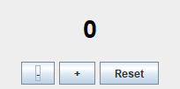
อธิบายทีละขั้น- state ของโปรแกรมคือ value ตัวเดียว
- ทุก listener เปลี่ยน state แล้วเรียก refresh()
- refresh() เป็นจุดเดียวที่อัปเดต UI จาก state — ทำให้หน้าจอตรงกับข้อมูลเสมอ
- ค่าลบแสดงเป็นสีแดง
ลองคิดก่อน · เมื่อไรโค้ดทำงานJButton b = new JButton("Go");
b.addActionListener(e -> System.out.println("clicked"));
System.out.println("listener added");
ข้อความใดถูกพิมพ์ก่อน และ “clicked” ถูกพิมพ์เมื่อไร
ดูคำตอบ
“listener added” พิมพ์ทันที ส่วน “clicked” พิมพ์ ทุกครั้งที่ผู้ใช้คลิกปุ่ม (อาจไม่พิมพ์เลยถ้าไม่มีใครคลิก)
16.2 ActionListener: สามวิธีเขียน
ActionListener เป็น interface ที่มีเมธอดเดียว actionPerformed(ActionEvent e) เขียนได้ 3 แบบ ผลลัพธ์เหมือนกัน: (1) คลาสแยกที่ implements, (2) anonymous class, (3) lambda (สั้นที่สุด นิยมที่สุด)
เปรียบเทียบ 3 แบบ// (1) คลาสที่ implements ActionListener
class GreetHandler implements ActionListener {
public void actionPerformed(ActionEvent e) { label.setText("Hi"); }
}
button.addActionListener(new GreetHandler());
// (2) anonymous class — สร้างคลาสไม่มีชื่อ ณ จุดที่ใช้
button.addActionListener(new ActionListener() {
@Override
public void actionPerformed(ActionEvent e) { label.setText("Hi"); }
});
// (3) lambda — เขียนเฉพาะ parameter และ body
button.addActionListener(e -> label.setText("Hi"));
ตัวอย่าง 16.2.1 · อ่านค่าจากช่องกรอกแล้วแสดงผล พื้นฐาน
แนวคิด: รูปแบบพื้นฐานที่สุดของ GUI: เมื่อคลิก → getText() จากช่อง → ประมวลผล → setText() ให้ label
GreetApp.java
import javax.swing.*;
import java.awt.event.ActionEvent;
import java.awt.event.ActionListener;
public class GreetApp {
public static void main(String[] args) {
SwingUtilities.invokeLater(() -> {
JFrame frame = new JFrame("Greeter");
frame.setDefaultCloseOperation(JFrame.EXIT_ON_CLOSE);
JTextField nameField = new JTextField(10);
JButton greet = new JButton("Greet");
JLabel result = new JLabel("Type your name");
// anonymous class: วิธีเขียนแบบเต็มก่อนมี lambda
greet.addActionListener(new ActionListener() {
@Override
// เมธอดที่ถูกเรียกเมื่อคลิก
public void actionPerformed(ActionEvent e) {
// อ่านข้อความจากช่องกรอก
String name = nameField.getText().trim();
result.setText("Hello, " + name + "!");
}
});
JPanel panel = new JPanel();
panel.add(nameField);
panel.add(greet);
panel.add(result);
frame.add(panel);
frame.setSize(380, 80);
frame.setVisible(true);
});
}
}
หน้าต่างที่ได้ (ภาพจากโปรแกรมจริง) อธิบายทีละขั้น- ตัวอย่างนี้เขียนแบบ anonymous class เพื่อให้เห็นเมธอด actionPerformed ชัด ๆ
- getText() คืน String ที่ผู้ใช้พิมพ์
- trim() ตัดช่องว่างหัวท้าย
- setText เปลี่ยนข้อความ label ทันที
ตัวอย่าง 16.2.2 · แปลงอุณหภูมิ: parse ตัวเลขจากช่องกรอก ต่อยอด
แนวคิด: ค่าจาก JTextField เป็น String เสมอ ต้อง Double.parseDouble ก่อนคำนวณ (บทที่ 9) แล้ว String.format ก่อนแสดง
TempConverter.java
import javax.swing.*;
import java.awt.*;
public class TempConverter {
public static void main(String[] args) {
SwingUtilities.invokeLater(() -> {
JFrame frame = new JFrame("C to F");
frame.setDefaultCloseOperation(JFrame.EXIT_ON_CLOSE);
JTextField celsius = new JTextField(6);
JButton convert = new JButton("Convert");
JLabel output = new JLabel("? °F");
convert.addActionListener(e -> {
// แปลงข้อความเป็นตัวเลขก่อนคำนวณ
double c = Double.parseDouble(celsius.getText().trim());
double f = c * 9 / 5 + 32;
// จัดรูปแบบทศนิยม 1 ตำแหน่ง
output.setText(String.format("%.1f °F", f));
});
JPanel p = new JPanel(new FlowLayout());
p.add(new JLabel("°C:"));
p.add(celsius);
p.add(convert);
p.add(output);
frame.add(p);
frame.pack();
frame.setVisible(true);
});
}
}
หน้าต่างที่ได้ (ภาพจากโปรแกรมจริง)หลังพิมพ์ 37.5 แล้วคลิก Convert
C to F
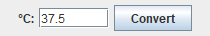
อธิบายทีละขั้น- parseDouble("37.5") → 37.5
- คำนวณ 99.5
- แสดงด้วย String.format ทศนิยม 1 ตำแหน่ง
- ถ้าผู้ใช้พิมพ์ "abc" จะเกิด NumberFormatException — บทที่ 17 จะตรวจข้อมูลก่อน
ตัวอย่าง 16.2.3 · listener เดียวหลายปุ่ม: getSource / getActionCommand ประยุกต์
แนวคิด: ปุ่มหลายปุ่มใช้ listener ตัวเดียวได้ แล้วแยกว่าใครกดด้วย e.getActionCommand() (ข้อความบนปุ่ม) หรือ e.getSource() (ออบเจ็กต์ปุ่ม)
QuizButtons.java
import javax.swing.*;
import java.awt.*;
import java.awt.event.ActionListener;
public class QuizButtons {
public static void main(String[] args) {
SwingUtilities.invokeLater(() -> {
JFrame frame = new JFrame("Quiz");
frame.setDefaultCloseOperation(JFrame.EXIT_ON_CLOSE);
JLabel question = new JLabel("Which keyword creates an object? A) class B) new C) void");
JLabel feedback = new JLabel(" ");
// listener ตัวเดียว ใช้กับหลายปุ่ม
ActionListener answer = e -> {
// ข้อความบนปุ่มที่ถูกคลิก
String choice = e.getActionCommand();
if (choice.equals("B")) {
feedback.setText("Correct! 'new' creates an object.");
feedback.setForeground(new Color(0, 128, 0));
} else {
feedback.setText(choice + " is wrong, try again.");
feedback.setForeground(Color.RED);
}
// getSource() = ปุ่มที่ถูกคลิก
((JButton) e.getSource()).setEnabled(false);
};
JPanel buttons = new JPanel();
for (String opt : new String[]{"A", "B", "C"}) {
JButton b = new JButton(opt);
// ทุกปุ่มใช้ listener เดียวกัน
b.addActionListener(answer);
buttons.add(b);
}
JPanel root = new JPanel(new GridLayout(3, 1, 4, 4));
root.setBorder(BorderFactory.createEmptyBorder(8, 8, 8, 8));
root.add(question);
root.add(buttons);
root.add(feedback);
frame.setContentPane(root);
frame.pack();
frame.setVisible(true);
});
}
}
หน้าต่างที่ได้ (ภาพจากโปรแกรมจริง)หลังคลิกปุ่ม B
Quiz

อธิบายทีละขั้น- listener ชื่อ answer เก็บในตัวแปรชนิด ActionListener แล้วใช้กับทั้ง 3 ปุ่ม
- getActionCommand() คืนข้อความของปุ่มที่ถูกกด
- getSource() คืนออบเจ็กต์ที่เป็นต้นเหตุ — cast เป็น JButton แล้วปิดปุ่มนั้น
- ภาพแสดงหลังคลิก B: ปุ่ม B ถูกปิด ข้อความสีเขียว
ลองคิดก่อน · lambdaเขียน listener แบบ lambda สำหรับปุ่ม clear ที่ล้างช่อง input และเปลี่ยน label status เป็น “Cleared”
ดูคำตอบ
clear.addActionListener(e -> {
input.setText("");
status.setText("Cleared");
});
16.3 Lambda, callback และ event ชนิดอื่น
Lambda คือการเขียนเมธอดสั้น ๆ ที่ไม่มีชื่อ ใช้ได้กับ interface ที่มีเมธอด abstract เดียว (functional interface) เช่น ActionListener, Runnable รูปแบบ (parameter) -> นิพจน์ หรือ (parameter) -> { คำสั่ง; } โค้ดที่ส่งไปให้คนอื่น “เรียกกลับ” ภายหลังแบบนี้เรียกว่า callback
| Listener | event | เกิดเมื่อ |
|---|
ActionListener | ActionEvent | คลิกปุ่ม, กด Enter ใน JTextField, เลือก JComboBox, คลิก check/radio |
ItemListener | ItemEvent | check box / radio / combo เปลี่ยนสถานะ |
ChangeListener | ChangeEvent | JSlider, JSpinner เปลี่ยนค่า |
DocumentListener | DocumentEvent | ข้อความในช่องเปลี่ยนทุกตัวอักษร |
MouseListener / KeyListener | MouseEvent / KeyEvent | คลิก/เลื่อนเมาส์, กดแป้นพิมพ์ |
ตัวอย่าง 16.3.1 · Enter ในช่องกรอก = คลิกปุ่ม ต่อยอด
แนวคิด: listener เดียวกันลงทะเบียนกับทั้งปุ่มและช่องกรอก (JTextField ส่ง ActionEvent เมื่อกด Enter) — ผู้ใช้เลือกวิธีที่สะดวก
QuickList.java
import javax.swing.*;
import java.awt.*;
import java.awt.event.ActionListener;
public class QuickList {
public static void main(String[] args) {
SwingUtilities.invokeLater(() -> {
JFrame frame = new JFrame("Quick list");
frame.setDefaultCloseOperation(JFrame.EXIT_ON_CLOSE);
JTextField input = new JTextField(14);
JButton add = new JButton("Add");
// model เก็บข้อมูลของ JList
DefaultListModel<String> model = new DefaultListModel<>();
// JList แสดงข้อมูลจาก model
JList<String> list = new JList<>(model);
// เก็บ listener ไว้ในตัวแปร เพื่อใช้ซ้ำ
ActionListener addItem = e -> {
String text = input.getText().trim();
// ไม่เพิ่มข้อความว่าง
if (!text.isEmpty()) {
// เพิ่มใน model แล้ว JList อัปเดตเอง
model.addElement((model.size() + 1) + ". " + text);
input.setText("");
}
// ให้เคอร์เซอร์กลับไปที่ช่องกรอก
input.requestFocusInWindow();
};
add.addActionListener(addItem); // คลิกปุ่ม Add
// กด Enter ในช่องกรอก ทำงานเดียวกัน
input.addActionListener(addItem);
JPanel top = new JPanel(new BorderLayout(4, 0));
top.add(input, BorderLayout.CENTER);
top.add(add, BorderLayout.EAST);
JPanel root = new JPanel(new BorderLayout(0, 6));
root.setBorder(BorderFactory.createEmptyBorder(8, 8, 8, 8));
root.add(top, BorderLayout.NORTH);
root.add(new JScrollPane(list), BorderLayout.CENTER);
frame.setContentPane(root);
frame.setSize(280, 200);
frame.setVisible(true);
});
}
}
หน้าต่างที่ได้ (ภาพจากโปรแกรมจริง)หลังเพิ่ม 3 รายการ
Quick list

อธิบายทีละขั้น- DefaultListModel คือข้อมูลของ JList — addElement แล้ว JList วาดใหม่เอง
- ไม่เพิ่มข้อความว่าง
- ล้างช่องและคืนโฟกัสให้พิมพ์รายการถัดไปได้ทันที
ตัวอย่าง 16.3.2 · ChangeListener: slider อัปเดตทันทีที่เลื่อน ประยุกต์
แนวคิด: ไม่ต้องมีปุ่ม — คำนวณใหม่ทุกครั้งที่ค่า slider เปลี่ยน ใช้ addChangeListener
TipCalculator.java
import javax.swing.*;
import java.awt.*;
public class TipCalculator {
public static void main(String[] args) {
SwingUtilities.invokeLater(() -> {
JFrame frame = new JFrame("Tip");
frame.setDefaultCloseOperation(JFrame.EXIT_ON_CLOSE);
double bill = 840.0;
// ต่ำสุด 0, สูงสุด 25, เริ่มที่ 10
JSlider tip = new JSlider(0, 25, 10);
tip.setMajorTickSpacing(5);
tip.setPaintTicks(true);
tip.setPaintLabels(true);
JLabel result = new JLabel();
// Runnable: งานที่สั่ง run() ได้
Runnable update = () -> {
// อ่านค่าปัจจุบันของ slider
int percent = tip.getValue();
double t = bill * percent / 100;
result.setText(String.format("Bill 840.00 + tip %d%% = %.2f baht", percent, bill + t));
};
// ChangeListener ทำงานทุกครั้งที่เลื่อน
tip.addChangeListener(e -> update.run());
// เปลี่ยนค่า → listener ทำงานทันที
tip.setValue(15);
JPanel root = new JPanel(new BorderLayout(0, 8));
root.setBorder(BorderFactory.createEmptyBorder(10, 10, 10, 10));
root.add(tip, BorderLayout.CENTER);
root.add(result, BorderLayout.SOUTH);
frame.setContentPane(root);
frame.pack();
frame.setVisible(true);
});
}
}
หน้าต่างที่ได้ (ภาพจากโปรแกรมจริง)Tip

อธิบายทีละขั้นRunnable update เก็บ lambda ไว้เรียกซ้ำ- ทุกครั้งที่ slider เปลี่ยนค่า listener เรียก update
tip.setValue(15) ในโค้ดก็กระตุ้น listener เช่นกัน label จึงมีข้อความตั้งแต่แรก
ตัวอย่าง 16.3.3 · เลือกจาก combo box แล้วเปลี่ยนรายละเอียด ประยุกต์
แนวคิด: JComboBox ส่ง ActionEvent เมื่อผู้ใช้เลือกรายการใหม่ ใช้ index ที่เลือกไปดึงข้อมูลจากอาเรย์คู่ขนาน
CourseInfo.java
import javax.swing.*;
import java.awt.*;
public class CourseInfo {
public static void main(String[] args) {
// ข้อมูลอาเรย์คู่ขนาน
String[] names = {"Programming", "Physics", "Calculus", "English"};
int[] credits = {3, 4, 3, 2};
String[] rooms = {"Lab 2", "SC-101", "SC-204", "LA-310"};
SwingUtilities.invokeLater(() -> {
JFrame frame = new JFrame("Course info");
frame.setDefaultCloseOperation(JFrame.EXIT_ON_CLOSE);
JComboBox<String> combo = new JComboBox<>(names);
JLabel detail = new JLabel();
// ทำงานเมื่อเลือกรายการใหม่
combo.addActionListener(e -> {
// ตำแหน่งที่เลือก ใช้ดึงข้อมูลจากทุกอาเรย์
int i = combo.getSelectedIndex();
detail.setText(names[i] + ": " + credits[i] + " credits, room " + rooms[i]);
});
// เลือกตัวแรกเพื่อให้แสดงรายละเอียดตั้งแต่เริ่ม
combo.setSelectedIndex(0);
JPanel root = new JPanel(new GridLayout(2, 1, 4, 4));
root.setBorder(BorderFactory.createEmptyBorder(8, 8, 8, 8));
root.add(combo);
root.add(detail);
frame.setContentPane(root);
frame.setSize(300, 100);
frame.setVisible(true);
});
}
}
หน้าต่างที่ได้ (ภาพจากโปรแกรมจริง)หลังเลือก Calculus
Course info
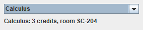
อธิบายทีละขั้น- getSelectedIndex() ให้ index ที่ตรงกับอาเรย์คู่ขนาน
- setSelectedIndex(0) ตอนเริ่มเพื่อให้ label มีข้อความแรก
- ภาพจำลองการเลือก index 2
ลองคิดก่อน · callbackRunnable r = () -> System.out.println("A"); แล้วบรรทัดต่อไปคือ System.out.println("B"); r.run(); r.run(); ผลลัพธ์คืออะไร
ดูคำตอบ
B A A — การสร้าง lambda ไม่ได้ทำงานทันที ทำเมื่อเรียก run()
16.4 เก็บ state และอัปเดต UI บน EDT
listener ทุกตัวทำงานบน EDT จึงแก้ component ได้อย่างปลอดภัย แต่ต้องระวัง 2 เรื่อง: (1) อย่าทำงานนานใน listener เพราะหน้าจอจะค้าง (2) ถ้าโปรแกรมมีข้อมูลซับซ้อน ให้แยก state (model) ออกจาก UI — listener แก้ model แล้วเรียกเมธอดเดียวที่วาดหน้าจอจาก model
ตัวอย่าง 16.4.1 · แยก model ออกจาก UI: กระปุกออมสิน ประยุกต์
แนวคิด: คลาส PiggyBank (model) มีกฎของตัวเองจากบทที่ 12 ส่วน UI ทำหน้าที่รับคำสั่งและแสดงผล — model ทดสอบได้โดยไม่ต้องมีหน้าจอ
PiggyBankApp.java
import javax.swing.*;
import java.awt.*;
public class PiggyBankApp {
// ส่วน logic แยกอยู่ในคลาส PiggyBank
private final PiggyBank bank = new PiggyBank();
private final JTextField amountField = new JTextField(8);
private final JLabel balanceLabel = new JLabel();
private final JLabel message = new JLabel(" ");
public static void main(String[] args) {
// สร้างออบเจ็กต์ แล้วเรียก show บน EDT
SwingUtilities.invokeLater(() -> new PiggyBankApp().show());
}
private void show() {
JFrame frame = new JFrame("Piggy Bank");
frame.setDefaultCloseOperation(JFrame.EXIT_ON_CLOSE);
JButton deposit = new JButton("Deposit");
JButton withdraw = new JButton("Withdraw");
// true = ฝาก
deposit.addActionListener(e -> act(true));
// false = ถอน
withdraw.addActionListener(e -> act(false));
JPanel input = new JPanel();
input.add(new JLabel("Amount:"));
input.add(amountField);
input.add(deposit);
input.add(withdraw);
JPanel root = new JPanel(new GridLayout(3, 1));
root.setBorder(BorderFactory.createEmptyBorder(6, 10, 6, 10));
root.add(balanceLabel);
root.add(input);
root.add(message);
frame.setContentPane(root);
refresh();
frame.pack();
frame.setVisible(true);
}
// ทั้งสองปุ่มใช้เมธอดเดียวกัน
private void act(boolean isDeposit) {
try {
// ข้อความที่ไม่ใช่ตัวเลข → NumberFormatException
double amount = Double.parseDouble(amountField.getText().trim());
// PiggyBank โยน exception เมื่อข้อมูลผิด
if (isDeposit) bank.deposit(amount);
else bank.withdraw(amount);
message.setText((isDeposit ? "Deposited " : "Withdrew ") + amount);
message.setForeground(new Color(0, 110, 0));
// กรอกไม่ใช่ตัวเลข
} catch (NumberFormatException ex) {
message.setText("Please enter a number");
message.setForeground(Color.RED);
// ข้อความจาก PiggyBank
} catch (IllegalArgumentException ex) {
message.setText(ex.getMessage());
message.setForeground(Color.RED);
}
amountField.setText("");
refresh(); // อัปเดตยอดทุกครั้ง
}
private void refresh() {
balanceLabel.setText(String.format("Balance: %,.2f baht", bank.getBalance()));
}
}
class PiggyBank { // คลาส logic ไม่รู้จัก Swing เลย
private double balance;
double getBalance() { return balance; }
void deposit(double amount) {
// ตรวจข้อมูลแล้วโยน exception
if (amount <= 0) throw new IllegalArgumentException("Amount must be positive");
balance += amount;
}
void withdraw(double amount) {
if (amount <= 0) throw new IllegalArgumentException("Amount must be positive");
// ถอนเกินยอด
if (amount > balance) throw new IllegalArgumentException("Not enough money (have " + balance + ")");
balance -= amount;
}
}
หน้าต่างที่ได้ (ภาพจากโปรแกรมจริง)ฝาก 500, ถอน 120, แล้วลองถอน 1000
Piggy Bank

อธิบายทีละขั้น- UI เป็นออบเจ็กต์ (ไม่ใช้ static) — component เป็น field เข้าถึงได้จากทุกเมธอด
- act() แปลงข้อความ เรียก model และจับ exception มาแสดงเป็นข้อความสีแดง
- refresh() วาดยอดเงินจาก model เสมอ
- ภาพแสดงการถอน 1000 ถูกปฏิเสธด้วยข้อความจากกฎของ PiggyBank
ตัวอย่าง 16.4.2 · เกมทายตัวเลขแบบ GUI ท้าทาย
แนวคิด: รวมทุกอย่าง: state หลายตัว (คำตอบ, จำนวนครั้ง, จบเกมหรือยัง), ประวัติใน JTextArea, ปิดปุ่มเมื่อจบเกม และปุ่มเริ่มใหม่ (คำตอบกำหนดเป็น 37 เพื่อให้ทดสอบได้ — บทเสริม Random จะสุ่มแทน)
GuessGui.java
import javax.swing.*;
import java.awt.*;
public class GuessGui {
private int secret = 37; // สถานะของเกมเก็บใน field
private int tries = 0;
private final JTextField input = new JTextField(5);
private final JButton guess = new JButton("Guess");
private final JTextArea history = new JTextArea(5, 22);
private final JLabel status = new JLabel("Guess a number 1-100");
public static void main(String[] args) {
SwingUtilities.invokeLater(() -> new GuessGui().show());
}
private void show() {
JFrame frame = new JFrame("Guess the Number");
frame.setDefaultCloseOperation(JFrame.EXIT_ON_CLOSE);
history.setEditable(false);
JButton restart = new JButton("New game");
guess.addActionListener(e -> onGuess()); // คลิกปุ่ม
// กด Enter ในช่องกรอก
input.addActionListener(e -> onGuess());
restart.addActionListener(e -> restart());
JPanel top = new JPanel();
top.add(input);
top.add(guess);
top.add(restart);
JPanel root = new JPanel(new BorderLayout(4, 4));
root.setBorder(BorderFactory.createEmptyBorder(8, 8, 8, 8));
root.add(top, BorderLayout.NORTH);
root.add(new JScrollPane(history), BorderLayout.CENTER);
root.add(status, BorderLayout.SOUTH);
frame.setContentPane(root);
frame.pack();
frame.setVisible(true);
}
private void onGuess() {
int g;
try { // ตรวจก่อนว่ากรอกตัวเลข
g = Integer.parseInt(input.getText().trim());
} catch (NumberFormatException ex) {
status.setText("Numbers only!");
return; // ไม่ใช่ตัวเลข → ไม่นับครั้ง
}
tries++;
if (g == secret) {
// append ต่อท้ายข้อความเดิม
history.append(g + " -> correct!\n");
status.setText("You got it in " + tries + " tries");
// ทายถูกแล้ว ปิดปุ่มและช่องกรอก
guess.setEnabled(false);
input.setEnabled(false);
} else {
// ?: เลือกคำใบ้
String hint = g > secret ? "too high" : "too low";
history.append(g + " -> " + hint + "\n");
status.setText("Try #" + (tries + 1));
}
input.setText("");
}
private void restart() {
tries = 0; // เริ่มเกมใหม่: ล้างสถานะทั้งหมด
history.setText("");
status.setText("Guess a number 1-100");
guess.setEnabled(true);
input.setEnabled(true);
}
}
หน้าต่างที่ได้ (ภาพจากโปรแกรมจริง)หลังทาย 50, 25, 37
Guess the Number
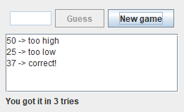
อธิบายทีละขั้น- state: secret, tries — field ของออบเจ็กต์ GuessGui
history.append ต่อท้ายประวัติ- ทายถูก → ปิดช่องและปุ่ม ป้องกันการทายต่อ
- New game รีเซ็ต state และ UI ทั้งหมด
- ใช้ return ออกจาก listener ก่อนเมื่อข้อมูลผิด
อย่าใช้ Thread.sleep ใน listenerbutton.addActionListener(e -> {
label.setText("Working...");
try { Thread.sleep(3000); } catch (InterruptedException ex) { } // ❌ หน้าจอค้าง 3 วินาที
label.setText("Done"); // และไม่เคยเห็น "Working..."
});
EDT ถูกบล็อกจึงไม่มีโอกาสวาดข้อความ “Working...” ให้เห็น งานที่ต้องรอหรือทำซ้ำตามเวลาให้ใช้ javax.swing.Timer หรือ SwingWorker (บทเสริม Timer และ Thread)
แบบฝึกหัดท้ายบท
ทุกข้อเป็นโปรแกรม GUI ที่ตอบสนองต่อผู้ใช้ ภาพตัวอย่างได้จากการรันเฉลยแล้วจำลองการกระทำตามคำบรรยายใต้ภาพ ให้ทดลองกดปุ่มด้วยลำดับเดียวกันแล้วเทียบผล
ระดับความยาก: ★ ง่าย★★ ปานกลาง★★★ ท้าทาย
Exercise 16.1ปุ่มเปลี่ยนข้อความ★ ง่าย
สร้างหน้าต่างที่มี label “Hello” และปุ่ม 2 ปุ่ม: English เปลี่ยน label เป็น “Hello” และ Thai เปลี่ยนเป็น “สวัสดี”
สิ่งที่ต้องทำ- ใช้ lambda กับ addActionListener
- ภาพตัวอย่างแสดงหลังคลิก Thai
ตัวอย่างหน้าจอ (ภาพจากโปรแกรมเฉลย)หลังคลิก Thai
Language
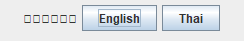
ตัวอย่างคำตอบ
LanguageSwitch.java
import javax.swing.*;
public class LanguageSwitch {
public static void main(String[] args) {
SwingUtilities.invokeLater(() -> {
JFrame frame = new JFrame("Language");
frame.setDefaultCloseOperation(JFrame.EXIT_ON_CLOSE);
JLabel label = new JLabel("Hello");
JButton en = new JButton("English");
JButton th = new JButton("Thai");
// lambda บรรทัดเดียว
en.addActionListener(e -> label.setText("Hello"));
// เปลี่ยนข้อความบน label เดิม
th.addActionListener(e -> label.setText("สวัสดี"));
JPanel p = new JPanel();
p.add(label);
p.add(en);
p.add(th);
frame.add(p);
frame.setSize(260, 80);
frame.setVisible(true);
});
}
}
Exercise 16.2นับคลิกขึ้นและลง พร้อมรีเซ็ต★ ง่าย
สร้างตัวนับที่มีปุ่ม +1, +5, -1 และ Reset แสดงค่าปัจจุบันตัวใหญ่ตรงกลาง ค่าต้องไม่ต่ำกว่า 0 (ถ้ากด -1 ตอนเป็น 0 ให้คงเป็น 0)
สิ่งที่ต้องทำ- เก็บค่าใน field
- เขียนเมธอด refresh() อัปเดต label ที่เดียว
- ใช้ Math.max(0, value - 1)
ตัวอย่างหน้าจอ (ภาพจากโปรแกรมเฉลย)หลังกด +5, +5, +1, −1, −1
Counter
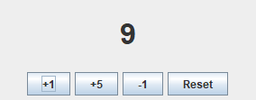
ตัวอย่างคำตอบ
MultiCounter.java
import javax.swing.*;
import java.awt.*;
public class MultiCounter {
// field static เพื่อให้ lambda แก้ค่าได้
private static int value = 0;
private static JLabel display;
public static void main(String[] args) {
SwingUtilities.invokeLater(() -> {
JFrame frame = new JFrame("Counter");
frame.setDefaultCloseOperation(JFrame.EXIT_ON_CLOSE);
display = new JLabel("0", SwingConstants.CENTER);
display.setFont(new Font("SansSerif", Font.BOLD, 32));
JPanel buttons = new JPanel();
// ส่ง "วิธีเปลี่ยนค่า" เป็น lambda
addButton(buttons, "+1", () -> value++);
addButton(buttons, "+5", () -> value += 5);
// ไม่ให้ติดลบ
addButton(buttons, "-1", () -> value = Math.max(0, value - 1));
addButton(buttons, "Reset", () -> value = 0);
frame.add(display, BorderLayout.CENTER);
frame.add(buttons, BorderLayout.SOUTH);
frame.setSize(300, 150);
frame.setVisible(true);
});
}
// Runnable change = งานเฉพาะของแต่ละปุ่ม
static void addButton(JPanel panel, String text, Runnable change) {
JButton b = new JButton(text);
b.addActionListener(e -> {
// ทำงานของปุ่มนี้
change.run();
// ส่วนที่ทุกปุ่มทำเหมือนกัน
display.setText(String.valueOf(value));
});
panel.add(b);
}
}
เมธอด addButton รับ Runnable (lambda) ที่บอกว่าแต่ละปุ่มเปลี่ยน value อย่างไร ทำให้ไม่ต้องเขียน listener ซ้ำ 4 ครั้ง
Exercise 16.3เครื่องคิดเลขบวกสองจำนวน★ ง่าย
สร้างหน้าต่างที่มีช่องกรอกตัวเลข 2 ช่อง ปุ่ม = และ label ผลลัพธ์ เมื่อคลิกให้แสดงผลบวก (รองรับทศนิยม) ในรูปแบบ 12.5 + 7 = 19.5
สิ่งที่ต้องทำ- ใช้ Double.parseDouble
- ข้อนี้ยังไม่ต้องตรวจข้อมูลผิดรูปแบบ (ทำในบทที่ 17)
ตัวอย่างหน้าจอ (ภาพจากโปรแกรมเฉลย)หลังกรอก 12.5 และ 7 แล้วคลิก =
Add
ตัวอย่างคำตอบ
AddTwo.java
import javax.swing.*;
public class AddTwo {
public static void main(String[] args) {
SwingUtilities.invokeLater(() -> {
JFrame frame = new JFrame("Add");
frame.setDefaultCloseOperation(JFrame.EXIT_ON_CLOSE);
JTextField a = new JTextField(5);
JTextField b = new JTextField(5);
JButton eq = new JButton("=");
JLabel result = new JLabel("?");
eq.addActionListener(e -> {
// อ่านค่าจากช่องกรอกตอนคลิก
double x = Double.parseDouble(a.getText().trim());
double y = Double.parseDouble(b.getText().trim());
// วงเล็บให้บวกเลขก่อนต่อข้อความ
result.setText(x + " + " + y + " = " + (x + y));
});
JPanel p = new JPanel();
p.add(a);
p.add(new JLabel("+"));
p.add(b);
p.add(eq);
p.add(result);
frame.add(p);
frame.setSize(380, 80);
frame.setVisible(true);
});
}
}
Exercise 16.4เครื่องคำนวณ BMI แบบ GUI★★ ปานกลาง
สร้างหน้าต่างรับน้ำหนัก (กก.) และส่วนสูง (ซม.) ปุ่ม Calculate แสดง BMI ทศนิยม 2 ตำแหน่งและกลุ่ม (Underweight < 18.5, Normal < 23, Overweight < 25, Obese ≥ 25) โดยสีของข้อความผลลัพธ์เปลี่ยนตามกลุ่ม (น้ำเงิน, เขียว, ส้ม, แดง)
สิ่งที่ต้องทำ- แยกเมธอด static
category(double bmi) คืน String - ใช้ GridLayout จัดฟอร์ม
- กด Enter ในช่องส่วนสูงให้คำนวณได้ด้วย
ตัวอย่างหน้าจอ (ภาพจากโปรแกรมเฉลย)น้ำหนัก 72 ส่วนสูง 170
BMI
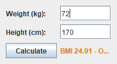
ตัวอย่างคำตอบ
BmiGui.java
import javax.swing.*;
import java.awt.*;
import java.awt.event.ActionListener;
public class BmiGui {
public static void main(String[] args) {
SwingUtilities.invokeLater(() -> {
JFrame frame = new JFrame("BMI");
frame.setDefaultCloseOperation(JFrame.EXIT_ON_CLOSE);
JTextField weight = new JTextField(6);
JTextField height = new JTextField(6);
JButton calc = new JButton("Calculate");
JLabel result = new JLabel(" ");
// listener เดียว ใช้กับปุ่มและ Enter
ActionListener compute = e -> {
double w = Double.parseDouble(weight.getText().trim());
// แปลงเซนติเมตรเป็นเมตร
double h = Double.parseDouble(height.getText().trim()) / 100;
double bmi = w / (h * h);
// แยก logic ไปเป็นเมธอด
String cat = category(bmi);
result.setText(String.format("BMI %.2f - %s", bmi, cat));
// switch แบบนิพจน์ เลือกสีตามกลุ่ม
result.setForeground(switch (cat) {
case "Underweight" -> Color.BLUE;
case "Normal" -> new Color(0, 128, 0);
case "Overweight" -> new Color(230, 120, 0);
default -> Color.RED;
});
};
calc.addActionListener(compute); // คลิกปุ่ม
// กด Enter ในช่องส่วนสูง
height.addActionListener(compute);
JPanel form = new JPanel(new GridLayout(0, 2, 6, 6));
form.setBorder(BorderFactory.createEmptyBorder(10, 10, 10, 10));
form.add(new JLabel("Weight (kg):"));
form.add(weight);
form.add(new JLabel("Height (cm):"));
form.add(height);
form.add(calc);
form.add(result);
frame.setContentPane(form);
frame.pack();
frame.setVisible(true);
});
}
// คืนชื่อกลุ่มตามช่วง BMI
static String category(double bmi) {
if (bmi < 18.5) return "Underweight";
if (bmi < 23) return "Normal";
if (bmi < 25) return "Overweight";
return "Obese";
}
}
Exercise 16.5สั่งเครื่องดื่มคำนวณราคาทันที★★ ปานกลาง
หน้าจอสั่งเครื่องดื่มที่มี combo box เมนู (Espresso 45, Latte 55, Mocha 60), radio ขนาด (S +0, M +10, L +20), check box “Extra shot +15” และ spinner จำนวน 1–10 ทุกครั้งที่ผู้ใช้เปลี่ยนตัวเลือกใด ๆ ให้คำนวณราคารวมใหม่ทันทีโดยไม่ต้องกดปุ่ม
สิ่งที่ต้องทำ- เขียนเมธอด updatePrice() เพียงตัวเดียว
- ลงทะเบียน listener ที่เรียก updatePrice กับทุก component (ActionListener สำหรับ combo/radio/check, ChangeListener สำหรับ spinner)
- แสดงสูตรการคำนวณใน label เช่น
(55 + 20 + 15) x 2 = 180
ตัวอย่างหน้าจอ (ภาพจากโปรแกรมเฉลย)Latte ขนาด L เพิ่ม Extra shot
Drink order
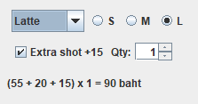
ตัวอย่างคำตอบ
DrinkPricing.java
import javax.swing.*;
import java.awt.*;
public class DrinkPricing {
// เมนูและราคาเป็นอาเรย์คู่ขนาน
static final String[] MENU = {"Espresso", "Latte", "Mocha"};
static final int[] PRICE = {45, 55, 60};
// component เป็น field ให้ทุกเมธอดใช้ได้
static JComboBox<String> menu;
static JRadioButton s, m, l;
static JCheckBox extra;
static JSpinner qty;
static JLabel total;
public static void main(String[] args) {
SwingUtilities.invokeLater(DrinkPricing::show);
}
static void show() {
JFrame frame = new JFrame("Drink order");
frame.setDefaultCloseOperation(JFrame.EXIT_ON_CLOSE);
menu = new JComboBox<>(MENU);
s = new JRadioButton("S", true);
m = new JRadioButton("M");
l = new JRadioButton("L");
ButtonGroup g = new ButtonGroup();
g.add(s); g.add(m); g.add(l); // ขนาดเลือกได้ทีละหนึ่ง
extra = new JCheckBox("Extra shot +15");
qty = new JSpinner(new SpinnerNumberModel(1, 1, 10, 1));
total = new JLabel();
// ทุก component สั่งคำนวณราคาใหม่
menu.addActionListener(e -> updatePrice());
// AbstractButton = แม่ของ JRadioButton และ JCheckBox
for (AbstractButton b : new AbstractButton[]{s, m, l, extra}) b.addActionListener(e -> updatePrice());
// spinner ใช้ ChangeListener
qty.addChangeListener(e -> updatePrice());
JPanel row1 = new JPanel(new FlowLayout(FlowLayout.LEFT));
row1.add(menu); row1.add(s); row1.add(m); row1.add(l);
JPanel row2 = new JPanel(new FlowLayout(FlowLayout.LEFT));
row2.add(extra); row2.add(new JLabel("Qty:")); row2.add(qty);
JPanel root = new JPanel(new GridLayout(3, 1));
root.add(row1); root.add(row2); root.add(total);
root.setBorder(BorderFactory.createEmptyBorder(6, 8, 6, 8));
updatePrice(); // คำนวณครั้งแรกตอนเปิด
frame.setContentPane(root);
frame.pack();
frame.setVisible(true);
}
static void updatePrice() {
// ราคาตามเมนูที่เลือก
int base = PRICE[menu.getSelectedIndex()];
// M +10, L +20
int size = m.isSelected() ? 10 : l.isSelected() ? 20 : 0;
int shot = extra.isSelected() ? 15 : 0;
// getValue() คืน Object จึงต้อง cast
int n = (int) qty.getValue();
total.setText(String.format("(%d + %d + %d) x %d = %d baht", base, size, shot, n, (base + size + shot) * n));
}
}
Exercise 16.6รายการสิ่งที่ต้องทำ: เพิ่มและลบ★★ ปานกลาง
สร้างแอป To-do ที่มีช่องกรอก ปุ่ม Add (และกด Enter ได้), JList แสดงรายการ, ปุ่ม Remove selected ลบรายการที่เลือก และ label ด้านล่างแสดงจำนวนรายการ ปุ่ม Remove ต้องถูกปิดเมื่อไม่มีรายการใดถูกเลือก
สิ่งที่ต้องทำ- ใช้ DefaultListModel
- ฟังการเลือกด้วย
list.addListSelectionListener(e -> ...) - เขียนเมธอด updateStatus() อัปเดต label และสถานะปุ่ม
ตัวอย่างหน้าจอ (ภาพจากโปรแกรมเฉลย)เพิ่ม 3 รายการ แล้วเลือกรายการที่ 2
To-do
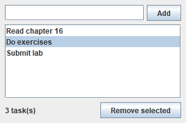
หลังกด Remove selected
To-do
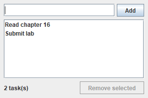
ตัวอย่างคำตอบ
TodoGui.java
import javax.swing.*;
import java.awt.*;
import java.awt.event.ActionListener;
public class TodoGui {
public static void main(String[] args) {
SwingUtilities.invokeLater(() -> {
JFrame frame = new JFrame("To-do");
frame.setDefaultCloseOperation(JFrame.EXIT_ON_CLOSE);
JTextField input = new JTextField(14);
JButton add = new JButton("Add");
DefaultListModel<String> model = new DefaultListModel<>();
JList<String> list = new JList<>(model);
JButton remove = new JButton("Remove selected");
JLabel status = new JLabel();
// งานอัปเดตสถานะ ใช้ซ้ำหลายที่
Runnable updateStatus = () -> {
status.setText(model.size() + " task(s)");
// เลือกรายการแล้วจึงลบได้
remove.setEnabled(list.getSelectedIndex() >= 0);
};
ActionListener addTask = e -> {
String t = input.getText().trim();
// ไม่เพิ่มงานว่าง
if (!t.isEmpty()) model.addElement(t);
input.setText("");
updateStatus.run();
};
add.addActionListener(addTask);
input.addActionListener(addTask);
remove.addActionListener(e -> {
// -1 = ไม่ได้เลือก
int i = list.getSelectedIndex();
if (i >= 0) model.remove(i);
updateStatus.run();
});
// ทำงานเมื่อเลือกรายการใน JList
list.addListSelectionListener(e -> updateStatus.run());
JPanel top = new JPanel(new BorderLayout(4, 0));
top.add(input, BorderLayout.CENTER);
top.add(add, BorderLayout.EAST);
JPanel bottom = new JPanel(new BorderLayout());
bottom.add(status, BorderLayout.WEST);
bottom.add(remove, BorderLayout.EAST);
JPanel root = new JPanel(new BorderLayout(0, 6));
root.setBorder(BorderFactory.createEmptyBorder(8, 8, 8, 8));
root.add(top, BorderLayout.NORTH);
root.add(new JScrollPane(list), BorderLayout.CENTER);
root.add(bottom, BorderLayout.SOUTH);
updateStatus.run();
frame.setContentPane(root);
frame.setSize(320, 240);
frame.setVisible(true);
});
}
}
Exercise 16.7เครื่องคิดเลขที่คำนวณได้จริง★★★ ท้าทาย
ต่อยอดหน้าจอ Keypad ในบทที่ 14 ให้คำนวณได้: ปุ่มตัวเลขและจุดต่อท้ายตัวเลขในจอ, ปุ่ม + − × ÷ เก็บตัวเลขแรกและเครื่องหมาย, ปุ่ม = คำนวณแล้วแสดงผล, ปุ่ม C ล้างทั้งหมด การหารด้วย 0 ให้แสดง Error
สิ่งที่ต้องทำ- state:
double first, String op, boolean startNew (ตัวเลขถัดไปเริ่มใหม่หรือไม่) - ใช้ listener ตัวเดียวสำหรับปุ่มตัวเลขทั้งหมด (getActionCommand)
- แสดงผลแบบตัด .0 ออกเมื่อเป็นจำนวนเต็ม
- ภาพตัวอย่าง: 12 × 3 = แล้วต่อด้วย − 6 =
ตัวอย่างหน้าจอ (ภาพจากโปรแกรมเฉลย)12 × 3 =
Calculator
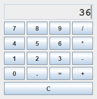
ตัวอย่างคำตอบ
WorkingCalculator.java
import javax.swing.*;
import java.awt.*;
import java.awt.event.ActionListener;
public class WorkingCalculator {
private double first = 0; // ตัวเลขแรกที่จำไว้
private String op = ""; // เครื่องหมายที่รอคำนวณ
// true = ตัวเลขถัดไปเริ่มใหม่
private boolean startNew = true;
private final JTextField display = new JTextField("0", 12);
public static void main(String[] args) {
SwingUtilities.invokeLater(() -> new WorkingCalculator().show());
}
private void show() {
JFrame frame = new JFrame("Calculator");
frame.setDefaultCloseOperation(JFrame.EXIT_ON_CLOSE);
display.setEditable(false);
display.setHorizontalAlignment(JTextField.RIGHT);
display.setFont(new Font("Monospaced", Font.BOLD, 20));
ActionListener digit = e -> { // ปุ่มตัวเลขและจุด
String d = e.getActionCommand();
if (startNew) { // เริ่มตัวเลขใหม่แทนค่าเดิม
display.setText(d.equals(".") ? "0." : d);
startNew = false;
// ห้ามมีจุดทศนิยมซ้ำ
} else if (!(d.equals(".") && display.getText().contains("."))) {
display.setText(display.getText() + d);
}
};
ActionListener operator = e -> { // ปุ่ม + - * /
// คำนวณค่าที่ค้างอยู่ก่อน
calculate();
op = e.getActionCommand();
startNew = true;
};
String[] keys = {"7", "8", "9", "/", "4", "5", "6", "*", "1", "2", "3", "-", "0", ".", "=", "+"};
JPanel pad = new JPanel(new GridLayout(4, 4, 4, 4));
for (String k : keys) {
JButton b = new JButton(k);
// ปุ่ม = คำนวณแล้วล้างเครื่องหมาย
if (k.equals("=")) b.addActionListener(e -> { calculate(); op = ""; startNew = true; });
// ตรวจว่าเป็นเครื่องหมายหรือไม่
else if ("/*-+".contains(k)) b.addActionListener(operator);
else b.addActionListener(digit);
pad.add(b);
}
JButton clear = new JButton("C");
// C ล้างทุกอย่าง
clear.addActionListener(e -> { first = 0; op = ""; startNew = true; display.setText("0"); });
JPanel root = new JPanel(new BorderLayout(4, 4));
root.setBorder(BorderFactory.createEmptyBorder(8, 8, 8, 8));
root.add(display, BorderLayout.NORTH);
root.add(pad, BorderLayout.CENTER);
root.add(clear, BorderLayout.SOUTH);
frame.setContentPane(root);
frame.pack();
frame.setVisible(true);
}
private void calculate() {
// อยู่ในสถานะ error ไม่คำนวณต่อ
if (display.getText().equals("Error")) return;
double current = Double.parseDouble(display.getText());
// ยังไม่มีเครื่องหมาย → จำเป็นตัวเลขแรก
if (op.isEmpty()) {
first = current;
return;
}
switch (op) {
case "+" -> first += current;
case "-" -> first -= current;
case "*" -> first *= current;
case "/" -> {
// หารด้วย 0 → แสดง Error
if (current == 0) { display.setText("Error"); op = ""; return; }
first /= current;
}
}
display.setText(format(first));
}
private static String format(double v) {
// ไม่มีทศนิยมแสดงเป็นจำนวนเต็ม
return v == Math.rint(v) ? String.valueOf((long) v) : String.valueOf(v);
}
}
Exercise 16.8แบบทดสอบหลายข้อแบบ GUI★★★ ท้าทาย
สร้างคลาส Question (โจทย์, ตัวเลือก 4 ข้อ, index คำตอบที่ถูก) และหน้าจอแบบทดสอบที่แสดงทีละข้อ ตัวเลือกเป็น radio button ปุ่ม Submit ตรวจคำตอบแล้วแสดงถูก/ผิด, ปุ่ม Next ไปข้อถัดไป (ใช้ได้หลังส่งคำตอบแล้วเท่านั้น) เมื่อจบให้แสดงคะแนนรวม มีอย่างน้อย 3 ข้อ
สิ่งที่ต้องทำ- เก็บคำถามใน
ArrayList<Question> - state: index ข้อปัจจุบัน, คะแนน, ส่งคำตอบข้อนี้แล้วหรือยัง
- เขียนเมธอด showQuestion() อัปเดตโจทย์และข้อความบน radio ทั้ง 4
- เคลียร์การเลือกด้วย
group.clearSelection()
ตัวอย่างหน้าจอ (ภาพจากโปรแกรมเฉลย)ข้อ 1 ตอบ new แล้ว Submit
Java Quiz
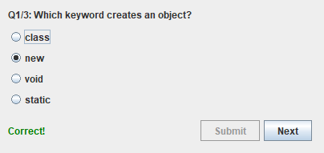
หลังตอบครบ 3 ข้อ (ข้อ 3 ตอบผิด)
Java Quiz
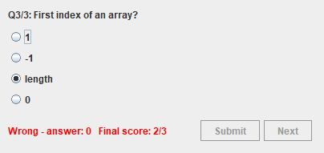
ตัวอย่างคำตอบ
QuizGui.java
import javax.swing.*;
import java.awt.*;
import java.util.ArrayList;
public class QuizGui {
// รายการคำถาม
private final ArrayList<Question> questions = new ArrayList<>();
// ข้อที่กำลังทำ และคะแนน
private int index = 0, score = 0;
private boolean answered = false;
private final JLabel prompt = new JLabel();
// ตัวเลือก 4 ข้อ
private final JRadioButton[] options = new JRadioButton[4];
// เลือกได้ทีละข้อ
private final ButtonGroup group = new ButtonGroup();
private final JLabel feedback = new JLabel(" ");
private final JButton submit = new JButton("Submit");
private final JButton next = new JButton("Next");
public static void main(String[] args) {
SwingUtilities.invokeLater(() -> new QuizGui().show());
}
private void show() {
// คำถาม, ตัวเลือก, index คำตอบที่ถูก
questions.add(new Question("Which keyword creates an object?", new String[]{"class", "new", "void", "static"}, 1));
questions.add(new Question("Which type stores text?", new String[]{"char", "int", "String", "boolean"}, 2));
questions.add(new Question("First index of an array?", new String[]{"1", "-1", "length", "0"}, 3));
JFrame frame = new JFrame("Java Quiz");
frame.setDefaultCloseOperation(JFrame.EXIT_ON_CLOSE);
JPanel optionPanel = new JPanel(new GridLayout(4, 1));
// สร้าง radio button 4 ตัว
for (int i = 0; i < 4; i++) {
options[i] = new JRadioButton();
group.add(options[i]);
optionPanel.add(options[i]);
}
submit.addActionListener(e -> onSubmit());
// ไปข้อถัดไป
next.addActionListener(e -> { index++; showQuestion(); });
JPanel buttons = new JPanel(new FlowLayout(FlowLayout.RIGHT));
buttons.add(submit);
buttons.add(next);
JPanel south = new JPanel(new BorderLayout());
south.add(feedback, BorderLayout.WEST);
south.add(buttons, BorderLayout.EAST);
JPanel root = new JPanel(new BorderLayout(6, 6));
root.setBorder(BorderFactory.createEmptyBorder(10, 10, 10, 10));
root.add(prompt, BorderLayout.NORTH);
root.add(optionPanel, BorderLayout.CENTER);
root.add(south, BorderLayout.SOUTH);
frame.setContentPane(root);
showQuestion(); // แสดงข้อแรก
frame.setSize(420, 230);
frame.setVisible(true);
}
private void showQuestion() {
Question q = questions.get(index); // คำถามข้อปัจจุบัน
prompt.setText("Q" + (index + 1) + "/" + questions.size() + ": " + q.text);
// ใส่ข้อความตัวเลือกของข้อนี้
for (int i = 0; i < 4; i++) options[i].setText(q.choices[i]);
// ล้างตัวเลือกที่เลือกไว้
group.clearSelection();
answered = false;
feedback.setText(" ");
submit.setEnabled(true);
next.setEnabled(false);
}
private void onSubmit() {
int chosen = -1;
// หาตัวเลือกที่ถูกเลือก
for (int i = 0; i < 4; i++) if (options[i].isSelected()) chosen = i;
// ยังไม่ได้เลือก
if (chosen == -1) {
feedback.setText("Choose an answer first");
return;
}
Question q = questions.get(index);
if (chosen == q.answer) { // เทียบกับ index คำตอบ
score++;
feedback.setText("Correct!");
feedback.setForeground(new Color(0, 128, 0));
} else {
feedback.setText("Wrong - answer: " + q.choices[q.answer]);
feedback.setForeground(Color.RED);
}
answered = true;
// ตอบแล้วส่งซ้ำไม่ได้
submit.setEnabled(false);
// ยังไม่ใช่ข้อสุดท้าย
if (index < questions.size() - 1) {
next.setEnabled(true);
} else {
// ข้อสุดท้าย → แสดงคะแนนรวม
feedback.setText(feedback.getText() + " Final score: " + score + "/" + questions.size());
}
}
}
class Question { // เก็บข้อมูลคำถามหนึ่งข้อ
final String text;
final String[] choices;
final int answer;
Question(String text, String[] choices, int answer) {
this.text = text;
this.choices = choices;
this.answer = answer;
}
}